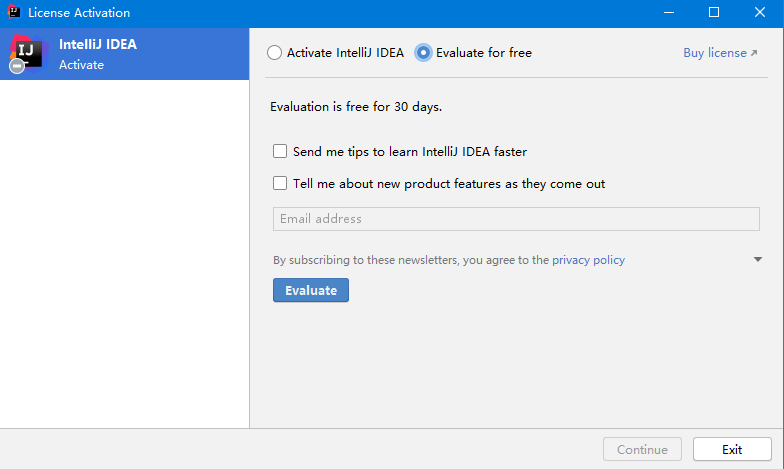
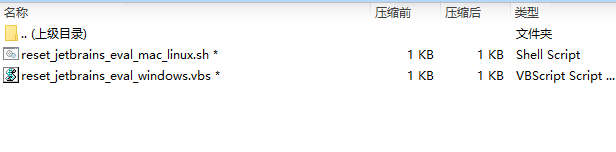
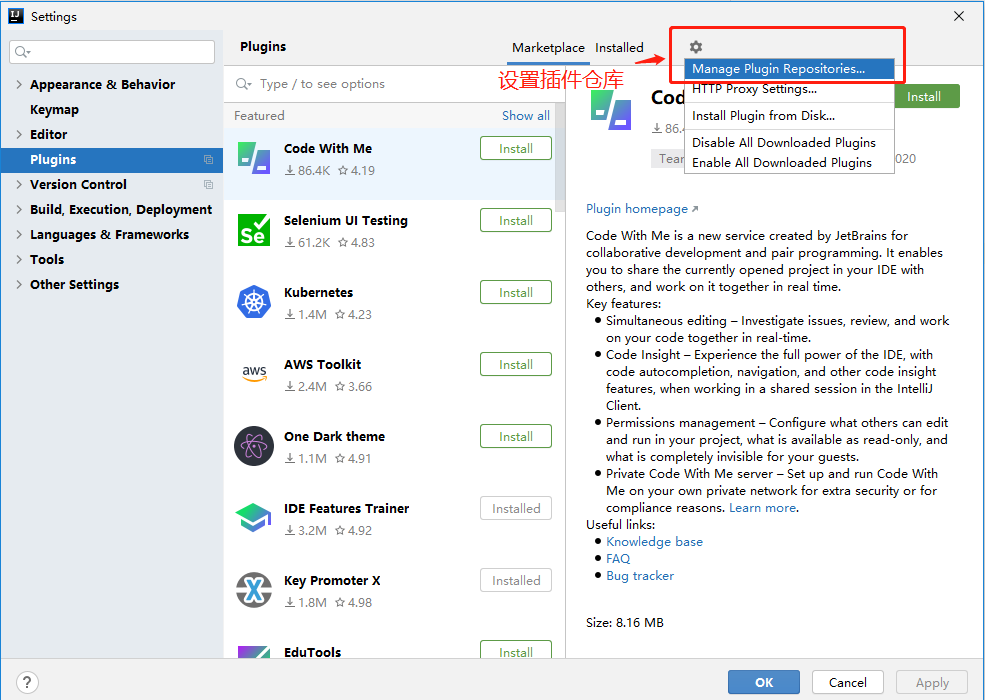
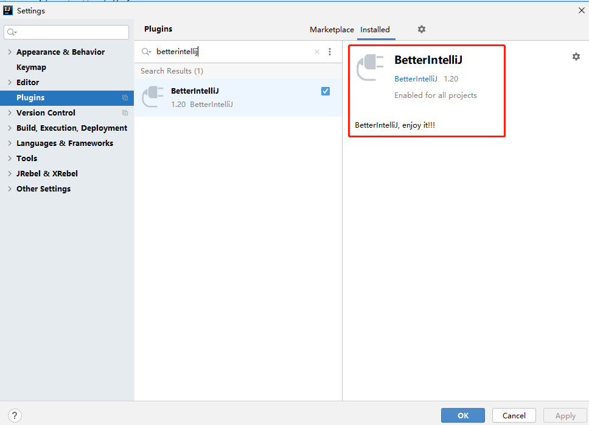
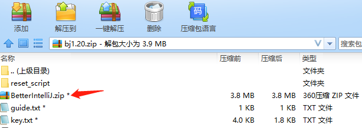
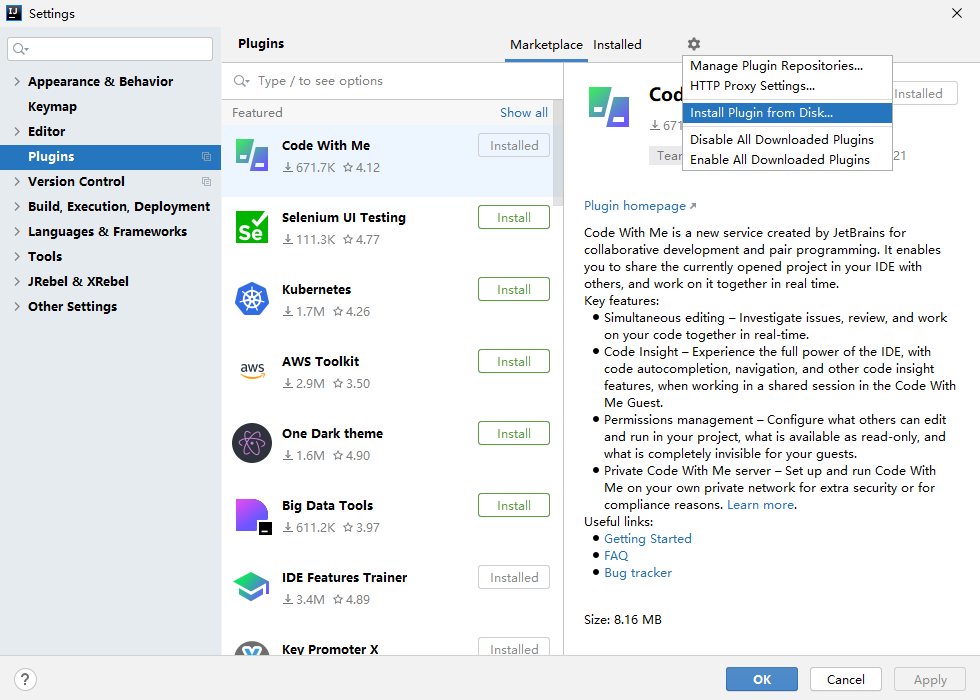
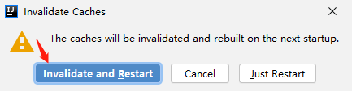
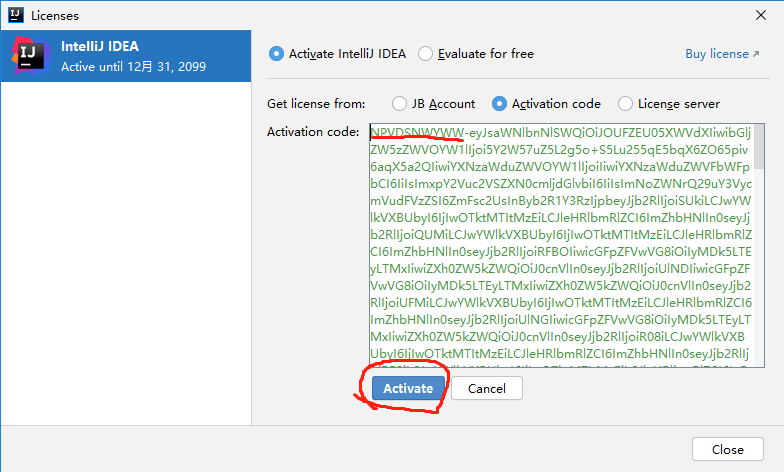
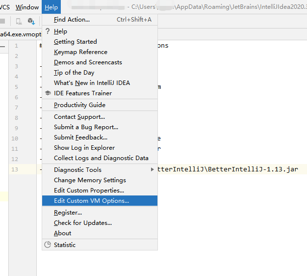

申明：本教程仅供个人学习使用，请勿商用，如有侵权，请联系作者删除。
1、支持在线安装和离线安装；
2、只要安装了该插件（激活码失效的情况下），也可以无限重置试用期；
3、支持纯净卸载，无毒~
特别重要：需要提前下载好相应的资源！！！
官网下载速度比X度快，所以自行到 JetBrains 官网下载需要的IDE安装包(必须是2020.1及以上的版本)。教程演示使用的是IDEA，所有的 JetBrains IDE 激活方式都一样，大胆往下看。点击下面链接下载当前最新版本，安装包下载完成后，双击开始安装，傻瓜式下一步安装即可：
IntelliJ IDEA：https://www.jetbrains.com/idea
GoLand：https://www.jetbrains.com/go
WebStorm：https://www.jetbrains.com/webstorm
PyCharm：https://www.jetbrains.com/pycharm
PhpStorm：https://www.jetbrains.com/phpstorm
相关软件安装完成后，选择 ”Evaluate for free“ 免费试用，点击 “Evaluate” 进入 IDE 中，新建或打开一个项目。

说明：如果不能出现这个界面，请打开压缩包执行相应的重置脚本~
windows系统：reset_jetbrains_eval_windows.vbs linux/mac系统：reset_jetbrains_eval_mac_linux.sh

下面开始介绍如何永久激活 JetBrains IDE。激活码文件你应该已经通过下方二维码领取了，领取的文件夹中有2个文件（请不要删除），如下：
guide.txt
key.txt
1、安装插件
1）在线安装插件（鼎力推荐）：打开插件中心 File -> Settings -> Manage Plugins Reposito，设置插件中心仓库，如下图所示

设置仓库地址：https://repo.idechajian.com ，如下图所示
点击OK，便可以在插件中心，搜索关键字“BetterIntellij”，如下图所示

点击安装或者更新，便会提示你，已自动配置好javaagent~
2) 离线安装插件：从下载的资源里面找到BetterIntelliJ.zip，如下图所示：

打开插件中心 File -> Settings -> Install Plugin From Disk，通过磁盘安装插件，如下图所示

特别重要：插件安装完成后，多点击一下界面上的其它按钮，必须要重启IDEA（检查进程，是否真得关闭了IDEA？），才能生效!!!


2、打开注册界面 Help -> Register，选择添加激活码（见key.txt），如下图所示

这时，你便激活成功了，到2099年~

一切就这么愉快的搞定了~
扫描下面二维码，回复关键字“10086”，便会得到文件夹中的激活码相关文件 ~

由于你安装了其它的破解补丁，需要去看看idea64.exe.vmoptions的配置对不对？ windows系统位置：C:\Users\用户名\AppData\Roaming\JetBrains\IntelliJIdea版本号\idea64.exe.vmoptions，建议去掉之前的 -javaagent 的配置。然后，再根据上面的教程安装咱们的破解补丁~
vmoptions找不到？打开IDEA，菜单栏:Help -> Edit Custom Properties，进行修改即可～
有同学说报“key is invaild”,是由于没有重启IDEA，就直接输入key.txt里面的激活码，肯定不行啊～～～～
建议检查一下javaagent是否配置成功？如图所示：

以windows为例，正确配置如下：-javaagent:C:\Users\Public\.BetterIntelliJ\BetterIntelliJ-版本号.jar
以unix/mac为例，正确配置如下：-javaagent:${HOME}//.BetterIntelliJ/BetterIntelliJ-版本号.jar